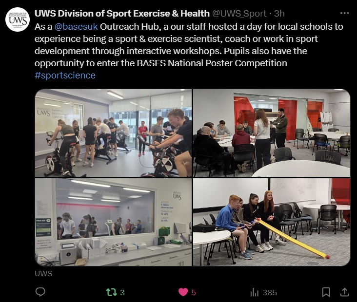
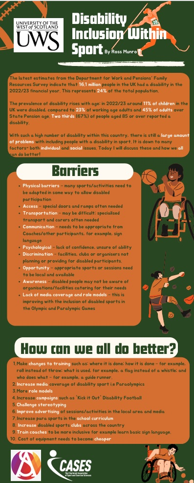
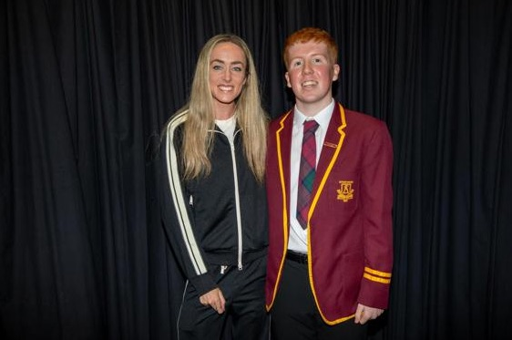

Nov 2024
Hub day
Ross visits his local Outreach Hub for a day of workshops, just like today.

Apr 2025
Poster wins
His poster on disability inclusion within sport is chosen as the winner.

May 2026
Olympian visit
Olympian Eilish visits Ross's school as the prize.